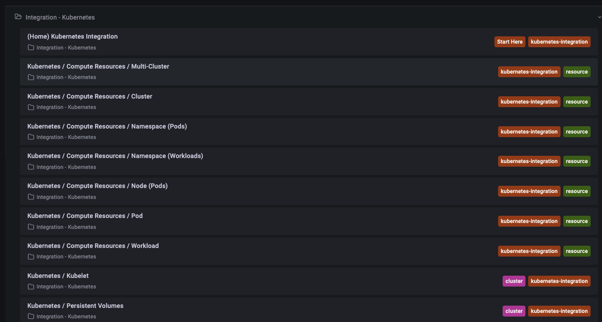

Grafana #
- Grafana is an opensource observability tool to query and visualize the data using interactive dashboards, etc.
- Grafana is one of the most popular companion solution with Prometheus, which can be queried from Grafana.
- Grafana supports other time-series databases like Prometheus, InfluxDB, and Graphite, monitoring platforms such as Sensu, Icinga, Checkmk,Zabbix, Netdata, and PRTG; SIEMs such as Elasticsearch and Splunk; and other data sources.
- GitHub Repo: https://github.com/grafana/grafana
- Developer: Grafana Labs, Language: Go
Cloud Offering #
- Grafana offers managed service as a cloud offering. You can register for Free to use Grafana Cloud using GitHub or Google account credentials by clicking here.
- Check out Pricing here. Their Free tier offers 3 users, 14 day retention, Synthetic, and Alerting with 10k metrics + 50GB logs + 50GB traces.
- Pro has Grafana ML, SSO/SAML integration, Query caching, Reporting, Data source permissions, etc.
Monitoring Kubernetes (Local Cluster - Grafana on Cloud) #
- My URL: https://ankurkumarz.grafana.net/
- Refer to full documentation here.
- Install the Agent in Kubernetes default cluster
MANIFEST_URL=https://raw.githubusercontent.com/grafana/agent/main/production/kubernetes/agent-bare.yaml NAMESPACE=default /bin/sh -c "$(curl -fsSL https://raw.githubusercontent.com/grafana/agent/release/production/kubernetes/install-bare.sh)" | kubectl apply -f -
- Run the following commands to install kube-state-metrics:
helm repo add prometheus-community https://prometheus-community.github.io/helm-charts && helm repo update && helm install ksm prometheus-community/kube-state-metrics --set image.tag=v2.2.0
- Configure and restart the agent (instructions in above doc link)
K8S Default Dashboards #

Key Findings #
-
Grafana is a de facto standard for visualization with real-time timeseries database like Prometheus
-
Key competition: Elastic’s Kibana, Cloud-providers native experience (e.g. AWS CloudWatch, Azure Monitor) or Observability/APM solutions like Dynatrace, New Relic, Splunk, etc.
-
Grafana can be integrate with all the above tools to visualize data in a single place.
-
Grafana key integrators:
-
Fully-managed Grafana services are being offered by:
- AWS Fully Managed Service
- Grafana Labs signed partnership with Microsoft Azure to deliver first-party Grafana Service. Click here to read more.
-
End-to-end Observability (Grafana Labs offers a managed service)
- Visualization with Grafana
- Metrics with Prometheus and Graphite
- Logs with Loki
- Traces with Tempo
Managed Service by Grafana Cloud by Grafana Labs #